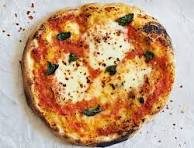

Double Chocolate Cookies

My daughter learned to make these cookies at a baking camp at Zingermanns and has tweaked the recipe to fit the taste buds of her siblings. They are extremely sugary so the salt helps to balance it. Note, these cookies are best eaten very quickly.
Recipe Ingredients
- Ingredients
- Unsalted butter
- Granulated Sugar
- Packed light or dark brown sugar
- Large egg
- Pure vanilla extract
- Semi-sweet chocolate chunks (melted)
- All-purpose flour
- Natural unsweetened cocoa powder
- Baking soda
- Salt
- Semi-sweet chocolate chunks
Recipe Steps
- In a mixing bowl cream together the butter, granulated sugar, and brown sugar
- Add the egg and vanilla extract and beat well
- Add the melted chocolate
- In a separate bowl combine the flour, baking soda, cocoa powder and salt
- Combine the wet and dry ingredients
- Add the unmelted chocolate chunks
- Form 15 cookies and place on a baking sheet
- Cook for 12 to 13 minutes at 350 degrees
Double Chocolate Chips

This is a tried-and-tested recipe that I have used numerous times for making the perfect chocolate chip banana bread! Not only does it help utilize the bananas that have slowly overripened at the back of the fridge, it ends up creating an incredibly delicious, and relatively healthy, dessert.
Recipe Ingredients
- Cooking spray
- 2 cups (240 g) all-purpose flour
- 1 tsp. baking soda
- 1/2 tsp. kosher salt
- 1 large egg plus 1 egg yolk
- 1 cup (200 g) granulated sugar
- 1/2 cup (1 stick) unsalted butter, melted
- 1/4 cup sour cream
- 1 tsp. pure vanilla extract
- 3 ripe bananas, mashed
- 1/2 cup chopped toasted walnuts
- 1/2 cup semisweet chocolate chips
Recipe Steps
- Preheat the oven to 350º. Line a 9"-by-5" loaf pan with parchment and grease with cooking spray.
- In a medium bowl, whisk flour, baking soda, and salt.
- In a large bowl, mix egg, egg yolk, granulated sugar, butter, sour cream, and vanilla. Add bananas and stir until combined. Gradually add dry ingredients to banana mixture until just combined.
- Fold in walnuts and chocolate chips and transfer to prepared pan.
- Bake bread until a tester inserted into the center comes out clean, about 1 hour. Let cool 10 minutes in pan, then invert onto a wire rack and let cool completely.
Margherita Pizza
Margherita pizza gets its name from Queen Margherita of Savoy, who was the Queen consort of Umberto I. It was once during her visit to Naples that the dish came into being.
A traditional Neapolitan Margherita pizza recipe is tomato sauce with fresh tomatoes, mozzarella cheese and basil which represent the colours of the Italian flag – white cheese, green basil and red tomato.
Recipe Ingredients
- 1/2 cup warm water
- 1/2 teaspoon active dry yeast
- 1 1/2 cups all-purpose flour
- 1/2 teaspoon salt
- 1 tablespoon olive oil
- 1/2 cup tomato sauce
- 1 cup shredded mozzarella cheese
- 1/2 cup fresh basil leaves
Recipe Steps
- In a large bowl, combine water and yeast. Let stand 5 minutes. Add flour, salt, and oil and stir until a sticky dough forms. Transfer to a lightly floured surface and knead until smooth, about 6 minutes. Shape into a ball, place in a large bowl, and cover with plastic wrap. Let rise in a warm place until doubled in size, about 1 hour.
- Preheat oven to 500°. Punch down dough and transfer to a lightly floured surface. Roll out into a 12” circle and transfer to a lightly greased pizza pan. Spread sauce over dough, leaving a 1” border, then top with mozzarella. Bake until crust is golden and cheese is melted and bubbling, about 15 minutes. Top with basil before serving.